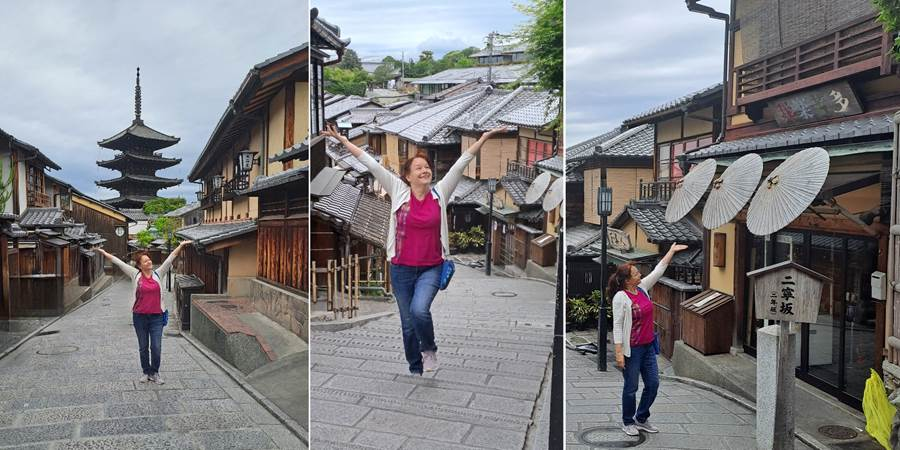
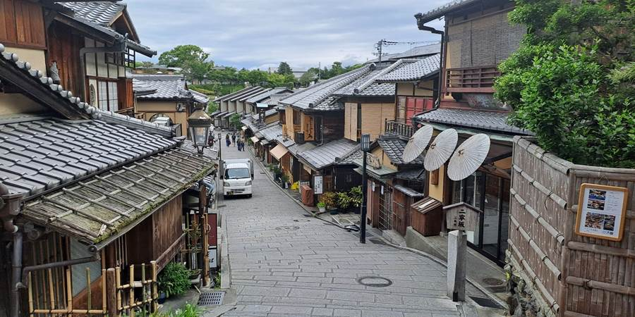
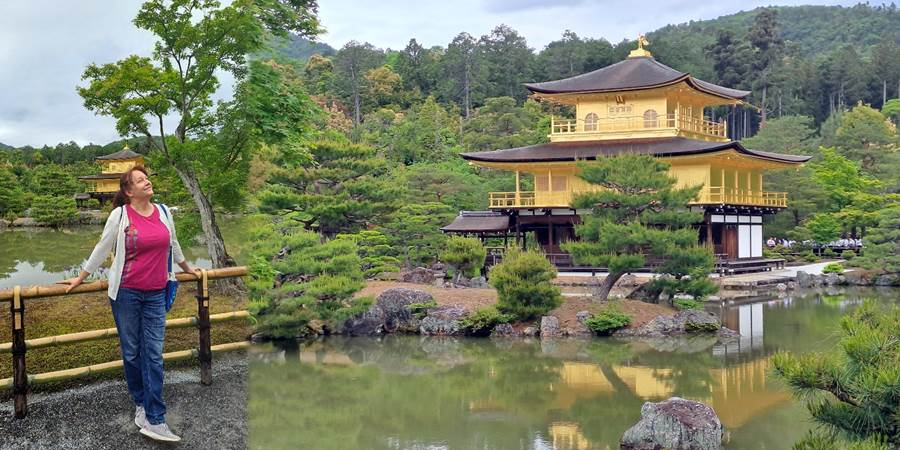
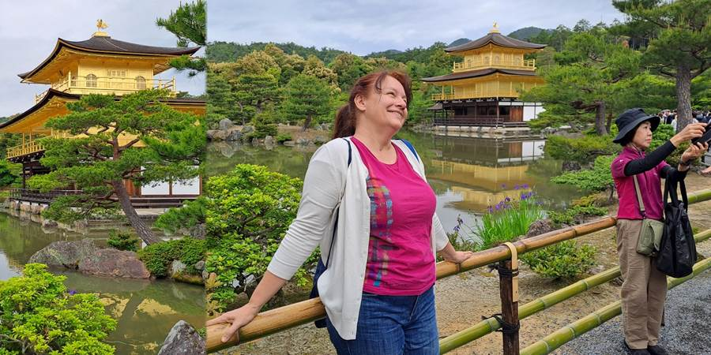

Dan deseti : Hram Zlatnog Paviljona
Treći dan Kjota. Kao pravi influenser, ustala sam u šest. Sa decom dogovor da ustanu u devet i operu veš (mi bekpekeri uvek najjeftinije avio-karte s najmanje prtljaga, pa sad peri gaće i čarape kad si u Japanu dve nedelje).
Veš mašina, zbog kućnog reda, ne sme da se pali pre 9 ujutru i posle 9 uveče. Jako, uvek i svugde paze da ne ugroze druge, ni bukom, ni mirisima parfema.
Tako da, eto meni vremena da idem na atrakcije i hramove bez gužve. Odlučim se prvo za Hokan-ji.

Hokan-ji je relativno blizu Kijomizu-Dere gde smo bili prvi dan u kimonima. U Japanu su ogromni gradovi i velike razdaljine. Valjda im je grad veći od Vojvodine. Dve blizu lokacije u gradu su pola sata vozom, kao kod nas vozom Sokolom do Beograda. Tako da ono što je blizu u Japanu, sasvim sigurno nije kod nas.
Uglavnom, odem ja do Hokan-ji, a tamo prazne ulice. Milina za slikanje. Taman po neko da mi bude fotograf. Okolo stare, drvene, retko sačuvane ulice.
Nadala sam se da ću videti gejšu ili bar učenicu maiko. Kanda je i njima bilo rano. Jedan taksi, onaj matori model (što Luka kaže – verovatno je nov, ali retro model jer Japanci vole retro) ušao skroz u gradić i čeka nekog.
Reko, sigurno gejšu da ide na mesto sastanka da je turisti ne razvuku slikajući. Stala ja čekam, čekam. Čeka i stari čika, taksista. Vidim i on se unervozio, izlazi, gleda. Nema je.
Dosadilo mi da čekam i otišla do Zlatnog paviljona. Otvara se za 20 minuta, u devet. Sreća nisam došla tu u 6.
11. sam bila u redu. A sad redina... Što je u Japanu uglavnom nebitno jer svuda redovi brzo prolaze. Zlatni paviljon je zaista zlatan. Popločan listićima od pravog zlata. Sav šljašti.
Ono što se meni posebno sviđa je što je na vodi. U ovom hramu je fazon da prodaju slatkiše i sake alkohol sa listićima zlata.
 Neverovatno je koliko u svakom hramu ima učenika u uniformama.